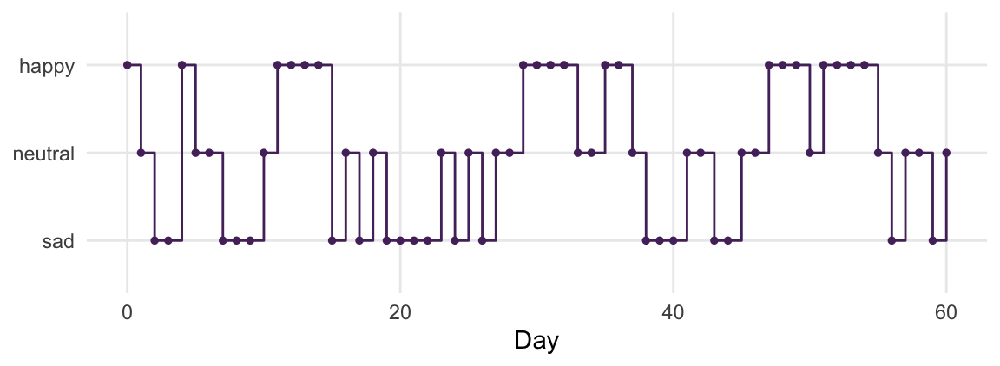
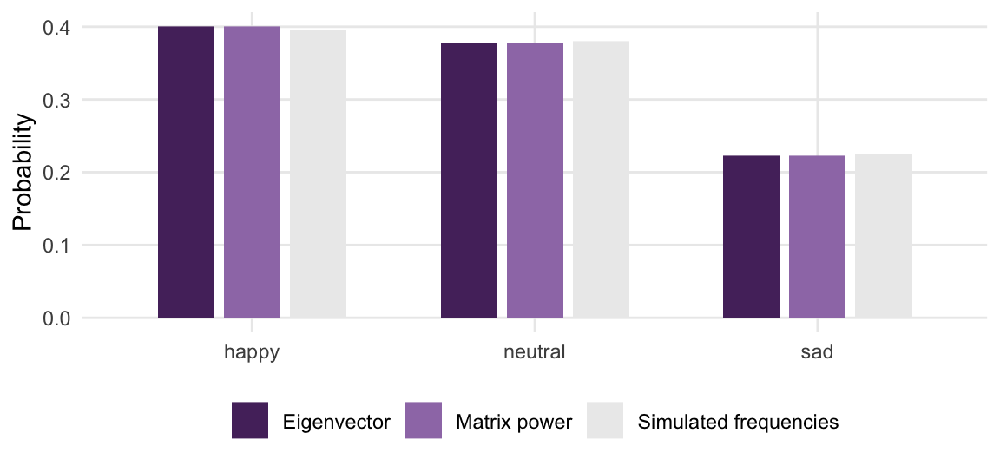
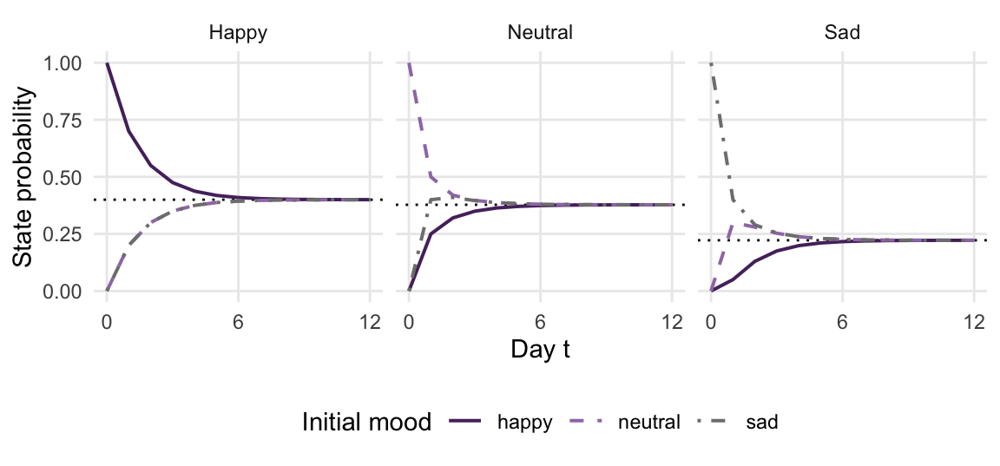
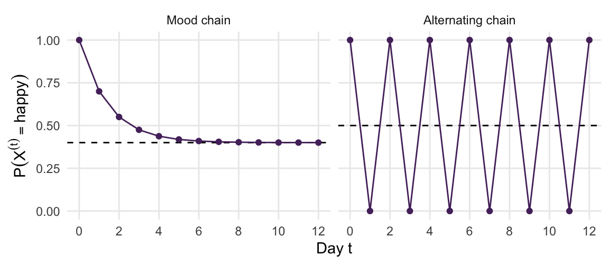
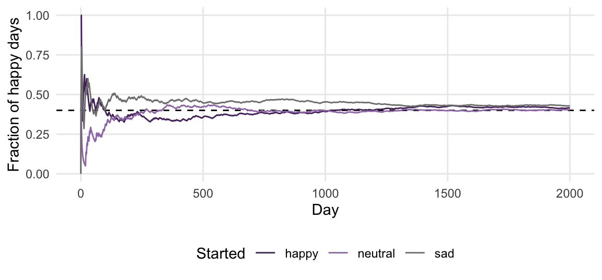
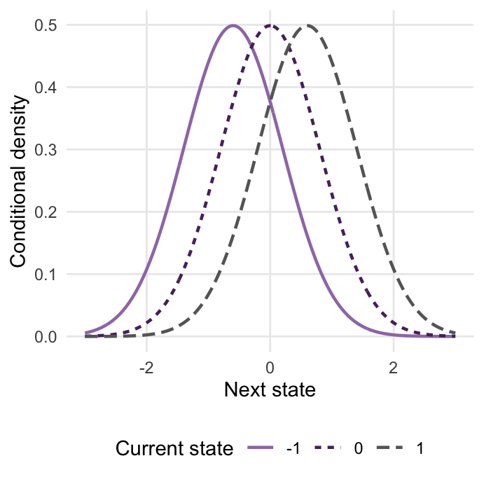
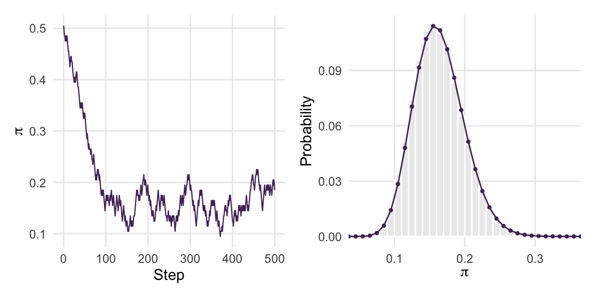

library(tidyverse)
library(patchwork)
set.seed(84735)3 Markov Chains
Suppose you keep a mood diary, recording happy, neutral, or sad each evening. A simple model might allow tomorrow’s mood to depend on today’s. For example, a happy day could be followed by another happy day more often than by a sad one. To use a Markov chain for this model, we make a specific assumption. Once today’s mood is known, knowing earlier moods provides no additional information about tomorrow’s mood. Whether this assumption describes a real diary well is a separate modeling question.
Markov chains also serve a computational purpose. Instead of modeling a person’s mood, we can construct a sequence of parameter values whose long-run behavior represents a posterior distribution. This chapter develops the connection, beginning with a small set of mood states and ending with a chain that samples a grid approximation to a posterior.
We will distinguish the value of a chain at one time from the distribution of that value, and distinguish convergence of distributions from convergence of averages along a chain. These distinctions explain how dependent simulation can support Bayesian inference. Run the following setup before working through the examples.
Goals
- Define and simulate a Markov chain with a finite set of possible states, specifying both its initial distribution and its transition probabilities.
- Compute and interpret state probabilities using a transition matrix and its powers.
- Determine stationary distributions using equations, eigenvectors, matrix powers, and simulated frequencies, and explain the conditions under which the last two methods apply.
- Analyze irreducibility and aperiodicity using examples and apply the finite-state convergence theorem.
- Distinguish a distribution at a specified time from a time average, and interpret the finite-state ergodic theorem.
- Verify detailed balance, explain why it implies stationarity, and check irreducibility and aperiodicity separately.
- Interpret a continuous transition rule through a worked Normal example.
- Construct and evaluate a grid-based sampling rule that preserves a chosen target distribution.
3.1 Chains on a finite state space
A state space is the set of values a chain can take. For the mood model it is \(\{\text{happy},\text{neutral},\text{sad}\}\). This is a finite state space because it contains only three possible values. Write \(X^{(t)}\) for the state at time \(t\), with \(t=0,1,2,\ldots\).
The Markov property says that, conditional on the current state, the distribution of the next state does not depend on earlier states: \[ P\!\left(X^{(t+1)}=j\mid X^{(t)}=i,X^{(t-1)},\ldots,X^{(0)}\right) =P\!\left(X^{(t+1)}=j\mid X^{(t)}=i\right). \] Here \(i\) is the current state and \(j\) is the next state. We consider time-homogeneous chains, whose transition probabilities do not change with \(t\), and write these probabilities as \(P_{ij}\). Numbering happy, neutral, and sad as states 1, 2, and 3 gives, for example, \[ P_{12}=P(\text{neutral tomorrow}\mid\text{happy today}). \]
Specifying a finite-state Markov chain
Specify the possible states, an initial distribution \(\boldsymbol{\mu}^{(0)}\) over them, and a transition matrix \(\mathbf P\). Entry \(P_{ij}\) is the probability of moving from state \(i\) to state \(j\) in one step.
A fixed initial state is a special case. Starting happy with certainty gives \(\boldsymbol{\mu}^{(0)}=(1,0,0)\). Alternatively, we can draw the initial state using any specified probability vector over the three moods.
Arrange the transition probabilities with one row for each current state and one column for each next state. The following matrix defines our illustrative mood model. In R, byrow = TRUE fills the entries row by row, and dimnames attaches the mood labels to both rows and columns:
moods <- c("happy", "neutral", "sad")
P <- matrix(c(0.70, 0.25, 0.05,
0.20, 0.50, 0.30,
0.20, 0.40, 0.40),
nrow = 3, byrow = TRUE, dimnames = list(moods, moods))
P
#> happy neutral sad
#> happy 0.7 0.25 0.05
#> neutral 0.2 0.50 0.30
#> sad 0.2 0.40 0.40Read it by rows. After a happy day, the next day is happy with probability \(0.70\), neutral with probability \(0.25\), and sad with probability \(0.05\). After a sad day, the mood stays sad with probability \(0.40\), recovers to neutral with probability \(0.40\), and jumps straight to happy with probability \(0.20\). Every row is a probability distribution over tomorrow, so every row sums to one:
rowSums(P)
#> happy neutral sad
#> 1 1 1The column sums need not equal one. A matrix with non-negative entries and row sums of one is called a stochastic matrix. Together with an initial distribution, it specifies a time-homogeneous Markov chain.
A note on notation. In this chapter the states are moods, so we call the chain \(X^{(t)}\) and the states \(i\) and \(j\). From Chapter 5 (The Metropolis Algorithm) on, the states are candidate values of a parameter, and we write the chain as \(\theta^{(t)}\), as in Appendix B (Notation). The states then describe a computational sequence rather than an observed sequence of moods. We use bold \(\boldsymbol{\pi}\) for a vector of stationary probabilities and plain \(\pi\) for an unknown proportion.
3.1.1 Simulating the chain
At each transition, select the row for the current mood and draw the next mood using that row’s probabilities. sample() takes the state labels, the number of draws, and the probabilities. For example, sample(moods, 1, prob = P["happy", ]) generates a possible next state after a happy day.
A simulated chain of length \(N\) contains the states \(X^{(0)},\ldots,X^{(N-1)}\), including the initial state. The function below takes T transitions and returns \(N=T+1\) states. With T = 60, it returns 61 states at times 0 through 60. The first stored element, x[1], represents \(X^{(0)}\).
simulate_chain <- function(P, init, T) {
states <- rownames(P)
x <- character(T + 1)
x[1] <- init
for (t in seq_len(T)) {
x[t + 1] <- sample(states, size = 1, prob = P[x[t], ])
}
x
}
diary <- simulate_chain(P, init = "happy", T = 60)
head(diary, 14)
#> [1] "happy" "neutral" "sad" "sad" "happy" "neutral" "neutral"
#> [8] "sad" "sad" "sad" "neutral" "happy" "happy" "happy"Consecutive entries can repeat. For example, the probability of remaining happy for one more day is \(P_{11}=0.70\). Figure 3.1 shows the resulting path. Each point is one realized state, not a probability distribution.
tibble(day = 0:60, mood = factor(diary, levels = rev(moods))) |>
ggplot(aes(day, mood, group = 1)) +
geom_step(color = "#552E6B") +
geom_point(color = "#552E6B", size = 1) +
labs(x = "Day", y = NULL)
3.1.2 Where will the chain be in \(t\) days?
The transition matrix answers questions about tomorrow. To ask about the day after tomorrow, we sum over what can happen in between. Starting from state \(i\), the chain reaches state \(j\) in two steps by passing through some state \(k\) on day one, so \[ P\!\left(X^{(t+2)} = j \mid X^{(t)} = i\right) = \sum_{k} P_{ik} P_{kj}, \] The index \(k\) runs over the possible intermediate states. Each product describes a two-step route, and summing the products accounts for all those routes. This is the \((i,j)\) entry of \(\mathbf P^2\). More generally, entry \((i,j)\) of \(\mathbf P^t\) is the probability of reaching \(j\) after \(t\) transitions from \(i\).
In R, %*% performs matrix multiplication, whereas P^2 squares each entry separately. The function below begins with the identity matrix, representing zero transitions, and multiplies by P once per transition. With t = 0, seq_len(t) is empty and the identity is returned.
mat_power <- function(P, t) {
out <- diag(nrow(P))
dimnames(out) <- dimnames(P)
for (k in seq_len(t)) out <- out %*% P
out
}
mat_power(P, 2)
#> happy neutral sad
#> happy 0.55 0.32 0.13
#> neutral 0.30 0.42 0.28
#> sad 0.30 0.41 0.29Quiz yourself!
Today is a happy day. Compute by hand, from \(\mathbf{P}\), the probability that the day after tomorrow is sad. Check your answer against mat_power(P, 2).
The distribution at a given time is a different object from one realized state. The vector \[ \boldsymbol\mu^{(t)}= \big(P(X^{(t)}=\text{happy}),P(X^{(t)}=\text{neutral}),P(X^{(t)}=\text{sad})\big) \] lists the probabilities of the three possible moods at time \(t\). Its entries sum to one. Starting happy with certainty gives \(\boldsymbol\mu^{(0)}=(1,0,0)\); one transition gives \((0.70,0.25,0.05)\).
For a less certain start, suppose \(\boldsymbol\mu^{(0)}=(0.2,0.5,0.3)\). The probability of a happy day after one transition is \[ 0.2\times0.70+0.5\times0.20+0.3\times0.20=0.30. \] The other entries are calculated in the same way. Matrix multiplication performs all three weighted sums:
mu0 <- c(happy = 0.2, neutral = 0.5, sad = 0.3)
mu0 %*% P
#> happy neutral sad
#> [1,] 0.3 0.42 0.28The result is \((0.30,0.42,0.28)\). It describes probabilities across possible realizations of the chain, not three moods experienced simultaneously by one person. We use row vectors, so the update is \[ \boldsymbol\mu^{(t+1)}=\boldsymbol\mu^{(t)}\mathbf P, \qquad \boldsymbol\mu^{(t)}=\boldsymbol\mu^{(0)}\mathbf P^t. \tag{3.1}\]
Each row of \(\mathbf P^t\) corresponds to a different fixed starting state. Compare the rows after five and twenty transitions:
round(mat_power(P, 5), 4)
#> happy neutral sad
#> happy 0.4187 0.3707 0.2105
#> neutral 0.3875 0.3825 0.2300
#> sad 0.3875 0.3825 0.2300
round(mat_power(P, 20), 4)
#> happy neutral sad
#> happy 0.4 0.3778 0.2222
#> neutral 0.4 0.3778 0.2222
#> sad 0.4 0.3778 0.2222After twenty transitions, the rows agree to four decimal places. The probability of a happy state is approximately 0.4 for any of the three starts. This is approximate agreement of state distributions; the individual paths still fluctuate.
3.2 Stationary distributions
Stationary distribution
A probability vector \(\boldsymbol{\pi} = (\pi_1, \ldots, \pi_S)\) over the \(S\) states is a stationary distribution of the chain with transition matrix \(\mathbf{P}\) if \[ \boldsymbol{\pi} \mathbf{P} = \boldsymbol{\pi}, \qquad \text{that is,} \qquad \sum_{i} \pi_i P_{ij} = \pi_j \quad \text{for every state } j. \] If \(X^{(t)}\) is distributed according to \(\boldsymbol{\pi}\), then so is \(X^{(t+1)}\), and so is every later state.
The definition says that \(\boldsymbol{\pi}\) is a fixed point of the update \(\boldsymbol{\mu} \mapsto \boldsymbol{\mu} \mathbf{P}\). If you start the chain by drawing \(X^{(0)}\) from \(\boldsymbol{\pi}\), the distribution of the state never changes, even though the state itself keeps moving. For a population of diary keepers following this model, the expected proportions in the three moods would then remain constant. Realized proportions in a finite population can still fluctuate. The word stationary describes the distribution, not an unchanging individual mood. We first solve its defining equations, then compare matrix powers and simulated frequencies.
Solve the equation. Write \(h\), \(u\), and \(s\) for the stationary probabilities of happy, neutral, and sad. The first stationary equation and \(h+u+s=1\) give \[ h=0.70h+0.20u+0.20s=0.70h+0.20(1-h), \qquad 0.50h=0.20, \] so \(h=0.40\). The neutral equation is \[ u=0.25(0.40)+0.50u+0.40(0.60-u) =0.34+0.10u. \] Thus \(u=0.34/0.90=17/45\), and \(s=0.60-17/45=2/9\). The stationary vector is \((0.40,17/45,2/9)\).
For a larger matrix, eigenvectors provide a numerical way to solve the same equation. The condition \(\boldsymbol{\pi} \mathbf{P} = \boldsymbol{\pi}\) says that \(\boldsymbol{\pi}\) is a left eigenvector of \(\mathbf{P}\) with eigenvalue 1. Equivalently, transposing both sides, \(\boldsymbol{\pi}^\top\) is an ordinary (right) eigenvector of \(\mathbf{P}^\top\), which is what eigen() computes. If you have encountered principal component analysis (PCA), the operation may be familiar. PCA finds eigenvectors of a covariance matrix to identify directions of variation. Here the matrix is \(\mathbf P^\top\), and an eigenvalue of one identifies a vector unchanged by the probability update. We rescale that eigenvector so its entries sum to one; no knowledge of PCA is needed for this calculation.
The function below is used for chains with a unique stationary distribution. If there are several stationary distributions, the eigenvalue-one condition alone does not select a particular mixture.
stationary <- function(P) {
e <- eigen(t(P))
k <- which.min(abs(e$values - 1)) # the eigenvalue equal to 1
v <- Re(e$vectors[, k])
setNames(v / sum(v), rownames(P))
}
pi_mood <- stationary(P)
pi_mood
#> happy neutral sad
#> 0.4000000 0.3777778 0.2222222For this chain, long-run frequencies approach about 40% of days are happy, 38% neutral, and 22% sad. We can check the defining equation directly:
pi_mood %*% P
#> happy neutral sad
#> [1,] 0.4 0.3777778 0.2222222Raise \(\mathbf{P}\) to a large power. For this chain, each row approaches the stationary vector as the power increases. The rows agree approximately, rather than becoming exactly equal after a finite number of transitions. The conditions supporting this approximation are stated in the next section.
mat_power(P, 50)[1, ]
#> happy neutral sad
#> 0.4000000 0.3777778 0.2222222Run the chain and count. The third way is the one that matters for the rest of the book. Simulate a long diary, and count how often each mood occurs:
long_diary <- simulate_chain(P, init = "sad", T = 20000)
freq_mood <- table(factor(long_diary[-1], levels = moods)) / 20000
freq_mood
#>
#> happy neutral sad
#> 0.39535 0.38000 0.22465The simulated frequencies approximate \(\boldsymbol{\pi}\) (Figure 3.2). We omit the initial state when counting the 20,000 generated states. Unlike the eigenvector and matrix-power calculations, these estimates vary from simulation to simulation. The ergodic theorem below explains why averaging along an appropriate chain can estimate properties of its stationary distribution.
tibble(mood = factor(rep(moods, 3), levels = moods),
method = rep(c("Eigenvector", "Matrix power", "Simulated frequencies"), each = 3),
probability = c(pi_mood, mat_power(P, 50)[1, ], as.numeric(freq_mood))) |>
ggplot(aes(mood, probability, fill = method)) +
geom_col(position = position_dodge(width = 0.7), width = 0.6) +
scale_fill_manual(values = c("#552E6B", "#9E7BB5", "#ECECEC"), name = NULL) +
labs(x = NULL, y = "Probability")
How quickly does the starting distribution matter less? Figure 3.3 follows all three mood probabilities from each possible initial state, using Equation 3.1. These are calculated probabilities, not three simulated diary paths.
forgetting <- expand_grid(start = moods, day = 0:12) |>
mutate(distribution = map2(start, day, \(s, t) {
mu0 <- setNames(as.numeric(moods == s), moods)
drop(mu0 %*% mat_power(P, t))
})) |>
unnest_wider(distribution) |>
pivot_longer(all_of(moods), names_to = "mood", values_to = "probability") |>
mutate(mood = factor(mood, levels = moods, labels = c("Happy", "Neutral", "Sad")))
stationary_lines <- tibble(mood = factor(c("Happy", "Neutral", "Sad"),
levels = c("Happy", "Neutral", "Sad")),
probability = as.numeric(pi_mood))
ggplot(forgetting, aes(day, probability, color = start, linetype = start)) +
geom_hline(data = stationary_lines, aes(yintercept = probability),
linetype = "dotted", inherit.aes = FALSE) +
geom_line(linewidth = 0.7) +
facet_wrap(~ mood) +
scale_color_manual(values = c("happy" = "#552E6B", "neutral" = "#9E7BB5", "sad" = "gray50"), name = "Initial mood") +
scale_linetype_manual(values = c("happy" = "solid", "neutral" = "dashed", "sad" = "dotdash"), name = "Initial mood") +
scale_x_continuous(breaks = c(0, 6, 12)) +
labs(x = "Day t", y = "State probability")
The overlapping curves in the Happy panel have a numerical explanation. A neutral or sad day is followed by a happy day with the same probability, 0.20. If \(p_t=P(X^{(t)}=\text{happy})\), then \[ p_{t+1}=0.70p_t+0.20(1-p_t)=0.20+0.50p_t. \] Neutral and sad starts both have \(p_0=0\), so their happy-state probabilities agree at every time. Subtract the stationary happy probability, 0.40, from the update: \[ p_{t+1}-0.40=0.50(p_t-0.40), \qquad p_t=0.40+0.50^t(p_0-0.40). \] For a happy start, the sequence begins \(1,0.70,0.55,0.475\). The difference from 0.40 halves at each transition. This explains the rate in this particular panel.
Eigenvalues connect this repeated multiplication to the matrix calculation. The eigenvalues of \(\mathbf P\) are 1, 0.5, and 0.1. The eigenvalue 1 corresponds to the stationary vector. In this example, the other components shrink at rates \(0.5^t\) and \(0.1^t\). A component multiplied by 0.99 at each transition would decline much more slowly; after 100 transitions it would retain about 37% of its initial size, because \(0.99^{100}\approx0.37\). Eigenvalues near one in absolute value can therefore indicate slow decay of initial differences.
Discarding initial states is one way to reduce the effect of an arbitrary start when estimating posterior summaries. It does not make later states independent. In Chapter 4 (Diagnosing Markov Chains), warm-up also includes the adaptation of sampler settings.
3.3 Irreducibility, aperiodicity, and convergence
The mood chain has a unique stationary distribution, and its state distribution approaches that distribution from every start. Every finite-state chain has at least one stationary distribution, but uniqueness and convergence require further conditions. The following examples separate those questions.
A chain with two closed groups of states. Consider a model with two types of diary keepers. Type A can be happy or neutral; type B can be sad or gloomy. In this model a person’s type stays fixed. Combining the four moods into one transition matrix gives two groups between which an individual chain cannot move:
P_split <- matrix(c(0.7, 0.3, 0.0, 0.0,
0.4, 0.6, 0.0, 0.0,
0.0, 0.0, 0.5, 0.5,
0.0, 0.0, 0.2, 0.8),
nrow = 4, byrow = TRUE,
dimnames = list(c("happy", "neutral", "sad", "gloomy"),
c("happy", "neutral", "sad", "gloomy")))
mat_power(P_split, 50)
#> happy neutral sad gloomy
#> happy 0.5714286 0.4285714 0.0000000 0.0000000
#> neutral 0.5714286 0.4285714 0.0000000 0.0000000
#> sad 0.0000000 0.0000000 0.2857143 0.7142857
#> gloomy 0.0000000 0.0000000 0.2857143 0.7142857Rows for type A approach \((4/7,3/7,0,0)\), while rows for type B approach \((0,0,2/7,5/7)\). Each vector is stationary, and any weighted average of the two is stationary as well. Starting in one group does not tell us the distribution of states in the other group.
This chain is reducible. A chain is irreducible if every state can be reached from every other in some finite number of transitions with positive probability. The mood chain with three states is irreducible, because every entry of its matrix is positive.
A chain that never settles. Now suppose a diary keeper’s moods alternate: a happy day is always followed by a sad one, and a sad day by a happy one.
P_swing <- matrix(c(0, 1,
1, 0),
nrow = 2, byrow = TRUE,
dimnames = list(c("happy", "sad"), c("happy", "sad")))
mat_power(P_swing, 7)
#> happy sad
#> happy 0 1
#> sad 1 0
mat_power(P_swing, 8)
#> happy sad
#> happy 1 0
#> sad 0 1This chain is irreducible and has the unique stationary distribution \((0.5,0.5)\). Check it by multiplication: \[ (0.5,0.5)\begin{pmatrix}0&1\\1&0\end{pmatrix}=(0.5,0.5). \] The stationary equation can hold even when the distribution from a fixed starting state oscillates. But \(\mathbf{P}^t\) never converges: it is \(\mathbf{P}\) for odd \(t\) and the identity for even \(t\). Started on a happy day, the chain is happy on every even day with certainty, forever (Figure 3.4). From that fixed initial state, the distribution of \(X^{(t)}\) does not approach \(\boldsymbol{\pi}\). Starting with \(\boldsymbol\pi=(0.5,0.5)\) would be different: That distribution is already stationary.
This chain is periodic with period 2: it can only return to a state after an even number of steps.
The period of a state is the greatest common divisor of its possible positive return times: The largest integer dividing every such time. Return times 2, 4, 6, and so on have common divisor 2. If returns are possible in both 2 and 3 transitions, their greatest common divisor is 1. A chain is aperiodic when every state has period 1.
A useful sufficient condition in an irreducible chain is a self-loop. If some \(P_{ii} > 0\), the chain can return to \(i\) in one step, so the period of \(i\) is 1, and in an irreducible chain all states share the same period. The mood chain has positive entries on its diagonal, so it is aperiodic.
p_happy <- function(P, start, t) {
mu0 <- setNames(as.numeric(rownames(P) == start), rownames(P))
if (t == 0) mu0["happy"] else (mu0 %*% mat_power(P, t))[1, "happy"]
}
bind_rows(
tibble(chain = "Mood chain", day = 0:12,
p = map_dbl(day, \(t) p_happy(P, "happy", t)), pi = pi_mood["happy"]),
tibble(chain = "Alternating chain", day = 0:12,
p = map_dbl(day, \(t) p_happy(P_swing, "happy", t)), pi = 0.5)
) |>
mutate(chain = factor(chain, levels = c("Mood chain", "Alternating chain"))) |>
ggplot(aes(day, p)) +
geom_hline(aes(yintercept = pi), linetype = "dashed") +
geom_line(color = "#552E6B") + geom_point(color = "#552E6B") +
facet_wrap(~ chain) +
scale_x_continuous(breaks = seq(0, 12, by = 2)) +
labs(x = "Day t", y = expression(P(X^(t) == "happy")))
The convergence theorem
Let \(\mathbf{P}\) be the transition matrix of a Markov chain on a finite state space.
- If the chain is irreducible, it has exactly one stationary distribution \(\boldsymbol{\pi}\), and every state has \(\pi_i > 0\).
- If the chain is also aperiodic, then \(\boldsymbol{\mu}^{(0)} \mathbf{P}^t \to \boldsymbol{\pi}\) as \(t \to \infty\) for every starting distribution \(\boldsymbol{\mu}^{(0)}\). Equivalently, every row of \(\mathbf{P}^t\) converges to \(\boldsymbol{\pi}\).
These finite-state results are developed in Norris (1997) and Robert & Casella (2004, Chapter 6). The examples illustrate why both conditions matter. The split chain has more than one stationary distribution; the alternating chain has one, but does not converge to it from a fixed state. In the sampling construction later in this chapter, we check stationarity, irreducibility, and aperiodicity separately.
Quiz yourself!
A chain on three states has transition matrix \[ \mathbf{P} = \begin{pmatrix} 0 & 1 & 0 \\ 0 & 0 & 1 \\ 1 & 0 & 0 \end{pmatrix}. \] Is it irreducible? What are the possible return times, and is it aperiodic? Check whether \((1/3,1/3,1/3)\) is stationary by multiplying it by \(\mathbf P\). Starting from \(\boldsymbol\mu^{(0)}=(1,0,0)\), does the state distribution converge to that vector? Use the theorem to explain your conclusions.
3.4 The ergodic theorem
Convergence of \(\boldsymbol{\mu}^{(t)}\) to \(\boldsymbol{\pi}\) is a statement about the distribution of the state on a single day \(t\). For Monte Carlo estimation, we usually average over many states from one chain, as in the calculation of freq_mood. The ergodic theorem establishes the convergence of these time averages. It is the Markov chain version of the law of large numbers from Chapter 1.
The ergodic theorem (informal)
Let \(X^{(0)}, X^{(1)}, \ldots\) be an irreducible Markov chain on a finite state space with stationary distribution \(\boldsymbol{\pi}\), and let \(h\) be any function of the state. Then, whatever the starting state, \[ \frac{1}{N} \sum_{t=1}^{N} h\!\left(X^{(t)}\right) \;\longrightarrow\; \sum_{i} h(i)\, \pi_i \qquad \text{as } N \to \infty. \] \(N\) is the number of sampled states included in the average. Long-run averages along one chain converge to expectations under the stationary distribution.
Take \(h(i) = 1\) if \(i\) is happy and \(0\) otherwise. The theorem says that the fraction of happy days in a long diary converges to \(\pi_{\text{happy}}\), which is what Figure 3.2 showed. Figure 3.5 shows the convergence in progress: three diaries of 2,000 days, started in the three moods, and for each the running fraction of happy days. Here the running fractions include the initial state, so they begin at 1, 0, and 0. Including one initial value does not change their limiting values, although finite-simulation estimates differ.
running <- map(moods, \(s) {
x <- simulate_chain(P, init = s, T = 2000)
tibble(start = s, day = 0:2000, running_mean = cummean(x == "happy"))
}) |> list_rbind()
ggplot(running, aes(day, running_mean, color = start)) +
geom_hline(yintercept = pi_mood["happy"], linetype = "dashed") +
geom_line() +
scale_color_manual(values = c("#552E6B", "#9E7BB5", "gray50"), name = "Started") +
coord_cartesian(ylim = c(0, 1)) +
labs(x = "Day", y = "Fraction of happy days")
The alternating chain illustrates the difference between the two kinds of convergence. Starting happy, its state distribution alternates forever between \((1,0)\) and \((0,1)\). Its time average of the happy-state indicator nevertheless approaches 0.5. Aperiodicity is needed for the finite-state distribution-convergence result, but not for this finite-state ergodic theorem.
Dependence also does not invalidate the time-average result. It does affect numerical precision. To isolate that effect, compare 365 observations from the mood chain with 365 independent draws from its stationary distribution. We draw the chain’s initial state from \(\boldsymbol\pi\) so that all 365 states have that marginal distribution and the comparison is not confounded by a fixed starting mood.
one_year <- function() {
initial_mood <- sample(moods, size = 1, prob = pi_mood)
chain <- simulate_chain(P, init = initial_mood, T = 364)
iid <- sample(moods, size = 365, replace = TRUE, prob = pi_mood)
c(chain = mean(chain == "happy"), iid = mean(iid == "happy"))
}
years <- map(1:500, \(i) one_year()) |> bind_rows()
years |> summarize(across(everything(), list(mean = mean, sd = sd)))
#> # A tibble: 1 × 4
#> chain_mean chain_sd iid_mean iid_sd
#> <dbl> <dbl> <dbl> <dbl>
#> 1 0.399 0.0427 0.399 0.0255Both estimates have expectation \(\pi_{\text{happy}}\). In this experiment, the standard deviation across the dependent-chain estimates is about 1.7 times the standard deviation across the independent estimates. The persistence of moods makes the chain estimates more variable. The ergodic theorem establishes their limiting behavior, but does not supply a standard error for a finite run. Chapter 4 (Diagnosing Markov Chains) develops effective sample size and Monte Carlo standard errors for dependent draws.
3.5 Detailed balance
So far, we have specified a transition matrix and investigated its stationary distribution. For posterior simulation, we work in the other direction. We specify the target distribution and choose transitions that preserve it. Many different transition matrices can have the same stationary distribution. Detailed balance provides a convenient way to construct one of them.
Suppose the current state has distribution \(\boldsymbol\pi\). The product \(\pi_iP_{ij}\) is the joint probability of being in \(i\) now and in \(j\) next. It can also be interpreted as an expected fraction of transitions in a large population of diary keepers. We call it the probability flow from \(i\) to \(j\) (Hanada & Matsuura, 2022, Section 3.4). Stationarity says that the total flow into each state equals the total flow out of it, so that no state gains or loses probability: \[ \underbrace{\sum_{i} \pi_i P_{ij}}_{\text{flow into } j} = \pi_j = \underbrace{\sum_{k} \pi_j P_{jk}}_{\text{flow out of } j}. \] This is a balance condition: it constrains the sums. Detailed balance asks for more, namely that the flow between each pair of states is the same in both directions.
Detailed balance
A transition matrix \(\mathbf{P}\) satisfies detailed balance with respect to a probability vector \(\boldsymbol{\pi}\) if \[ \pi_i P_{ij} = \pi_j P_{ji} \qquad \text{for all states } i, j. \] If detailed balance holds, then \(\boldsymbol{\pi}\) is a stationary distribution of the chain.
To show why detailed balance implies stationarity, fix any next state \(j\) and sum over the current states \(i\): \[ \sum_{i} \pi_i P_{ij} = \sum_{i} \pi_j P_{ji} = \pi_j \sum_{i} P_{ji} = \pi_j. \] The first equality is detailed balance, applied to every term. The second pulls \(\pi_j\) out of the sum, because it does not depend on \(i\). The third uses that row \(j\) of \(\mathbf{P}\) sums to one. The left-hand side is the \(j\)th entry of \(\boldsymbol{\pi} \mathbf{P}\), so we have shown \(\boldsymbol{\pi} \mathbf{P} = \boldsymbol{\pi}\). Thus pairwise balance ensures that the total probability arriving in each state equals its stationary probability. The proof uses the row-sum condition as well as detailed balance.
Detailed balance is sufficient for stationarity, not necessary. The mood chain is an example. Its stationary distribution certainly balances, but look at the flows in each direction:
flow <- P
for (i in seq_len(nrow(P))) {
flow[i, ] <- pi_mood[i] * P[i, ]
}
round(flow, 3)
#> happy neutral sad
#> happy 0.280 0.100 0.020
#> neutral 0.076 0.189 0.113
#> sad 0.044 0.089 0.089
round(flow - t(flow), 3) # zero everywhere if detailed balance holds
#> happy neutral sad
#> happy 0.000 0.024 -0.024
#> neutral -0.024 0.000 0.024
#> sad 0.024 -0.024 0.000The loop multiplies every entry in row \(i\) by \(\pi_i\). For example, the happy-to-neutral flow is \(0.40\times0.25=0.10\), whereas the neutral-to-happy flow is \((17/45)\times0.20\approx0.0756\). Transposing the matrix reverses each pair of states, so flow - t(flow) compares the two directions.
Quiz yourself!
What does a positive entry in flow - t(flow) mean? Why are its diagonal entries zero even when detailed balance fails? Would zero column sums of this difference be enough to establish detailed balance?
More diary keepers go from happy to neutral each day than from neutral to happy, more go from neutral to sad than back, and more go from sad to happy than the other way. The flows do not match pairwise; instead there is a steady circulation happy \(\to\) neutral \(\to\) sad \(\to\) happy, of about 0.024 of the population per day, and every state still receives as much as it gives. A chain satisfying detailed balance is reversible when started in its stationary distribution. Reversing the order of a stationary sequence does not change its joint probability law. The mood model has a stationary distribution but does not satisfy detailed balance, so reversibility is not required for stationarity.
3.5.1 What detailed balance guarantees
Detailed balance implies that the specified target distribution is stationary. It does not imply irreducibility or aperiodicity.
- The identity matrix leaves every state where it is. It satisfies detailed balance for any target vector, because all flows between different states are zero. Yet it is reducible and cannot explore the target.
- The alternating two-state chain satisfies detailed balance for \((0.5,0.5)\), because the flow in either direction is 0.5. It is irreducible but periodic.
For a finite-state sampler, the checks therefore serve different purposes:
| Check | What it establishes |
|---|---|
| Detailed balance with the target | The target is stationary |
| Irreducibility | There is a unique stationary distribution; time averages converge to its expectations |
| Irreducibility and aperiodicity | State distributions approach the stationary distribution from any start |
3.5.2 Choosing transitions for a target
Consider a target with two states and probabilities \(\boldsymbol\pi=(0.25,0.75)\). We can choose \(P_{12}=0.30\) and determine the reverse probability from detailed balance: \[ 0.25\times0.30=0.75\times P_{21},\qquad P_{21}=0.10. \] Complete each row by assigning its remaining probability to staying in the same state: \[ \mathbf P_* =\begin{pmatrix}0.70&0.30\\0.10&0.90\end{pmatrix}. \] Both cross-state flows are 0.075. Direct multiplication confirms that \((0.25,0.75)\mathbf P_*=(0.25,0.75)\). The chain is also irreducible, because both cross-state transitions have positive probability, and aperiodic, because it can stay in a state.
The choice is not unique. Smaller cross-state transition probabilities can satisfy the same equation but produce a slower-moving chain. In general, for positive target probabilities and a pair of permitted moves, detailed balance can be written \[ \frac{P_{ij}}{P_{ji}}=\frac{\pi_j}{\pi_i}. \] If the target is known up to a common normalizing constant, that constant cancels in the ratio on the right. We can therefore design transitions using relative target weights. The grid construction below applies this idea to a posterior.
Quiz yourself!
A chain has only two states, with \(P_{12} = a\) and \(P_{21} = b\), both positive. Find its stationary distribution, and show that every such two-state chain satisfies detailed balance. Why is the three-state mood chain different?
3.6 From transition matrices to transition kernels
Most parameters in this book take values in intervals or in a continuous space with several coordinates. We can no longer list a transition probability for each possible next value in a finite matrix. Instead, a transition kernel specifies the distribution of the next state given the current state.
3.6.1 A Normal transition example
Suppose the transition rule is \[ \theta^{(t+1)}=0.6\theta^{(t)}+0.8Z^{(t+1)}, \qquad Z^{(t+1)}\sim\text{N}(0,1), \] where each new \(Z^{(t+1)}\) is independent of the earlier states and random draws. Given a current value \(\theta\), the next state has a Normal distribution with mean \(0.6\theta\) and standard deviation \(0.8\): \[ \theta^{(t+1)}\mid\theta^{(t)}=\theta \sim\text{N}(0.6\theta,0.8^2). \] For example, from \(\theta=1\), the next-state distribution is \(\text{N}(0.6,0.8^2)\). We can generate possible next values or calculate an interval probability:
current <- 1
rnorm(5, mean = 0.6 * current, sd = 0.8)
#> [1] 0.4418550 0.9341408 -0.2223582 -1.0836614 0.7676876
pnorm(1, mean = 0.6 * current, sd = 0.8) -
pnorm(0, mean = 0.6 * current, sd = 0.8)
#> [1] 0.4648351The five draws are independent possible next states from the same current value; they are not five consecutive states of a chain. The last calculation gives a probability of about 0.465 that the next state lies between zero and one. To generate a chain, use each new state as the current value for the next transition.

A useful property of Normal variables
If \(X\) and \(Z\) are independent Normal variables, then \(aX+bZ\) is also Normal. Its mean and variance are \[ \mathbb E[aX+bZ]=a\,\mathbb E[X]+b\,\mathbb E[Z], \] \[ \operatorname{Var}(aX+bZ)=a^2\operatorname{Var}(X)+b^2\operatorname{Var}(Z). \] Independence is essential here: without it, the variance also includes a covariance term.
To check whether the standard Normal distribution is stationary, suppose the current state has distribution \(\theta^{(t)}\sim\text{N}(0,1)\). The new draw \(Z^{(t+1)}\sim\text{N}(0,1)\) is independent of that state. By the property above, the next state, \[ \theta^{(t+1)}=0.6\theta^{(t)}+0.8Z^{(t+1)}, \] is also Normal. Its mean is zero, and its variance is \[ 0.6^2\times1+0.8^2\times1=0.36+0.64=1. \] Thus \(\theta^{(t+1)}\sim\text{N}(0,1)\): one transition preserves the standard Normal distribution, establishing stationarity. The individual values still change; it is their distribution that stays the same.
3.6.2 When a transition has a density
When the next-state distribution has a density, write it as \(K(\theta,\theta')\), with \(\theta\) the current state and \(\theta'\) the next state. Fixing \(\theta\) gives the continuous counterpart of one row of a transition matrix. For the Normal example, \[ K(\theta,\theta')=\frac{1}{0.8\sqrt{2\pi}} \exp\!\left[-\frac{(\theta'-0.6\theta)^2}{2(0.8)^2}\right]. \] A density value is not a transition probability. The probability of reaching an interval is an area: \[ P(a<\theta^{(t+1)}<b\mid\theta^{(t)}=\theta) =\int_a^b K(\theta,\theta')\,d\theta'. \] For kernels that have such a density, the finite-state equations take the following forms:
| Finite states | Transitions with a density |
|---|---|
| \(P_{ij}\) is a probability of the next state | \(K(\theta,\theta')\) is a density for the next state |
| \(\sum_jP_{ij}=1\) | \(\int K(\theta,\theta')\,d\theta'=1\) |
| \(\sum_i\pi_iP_{ij}=\pi_j\) | \(\int f(\theta)K(\theta,\theta')\,d\theta=f(\theta')\) |
| \(\pi_iP_{ij}=\pi_jP_{ji}\) | \(f(\theta)K(\theta,\theta')=f(\theta')K(\theta',\theta)\) |
Here \(f\) is the candidate stationary density. Detailed balance implies stationarity by integration, just as it did by summation: \[ \begin{aligned} \int f(\theta)K(\theta,\theta')\,d\theta &=\int f(\theta')K(\theta',\theta)\,d\theta\\ &=f(\theta')\int K(\theta',\theta)\,d\theta =f(\theta'). \end{aligned} \] The final integral is one because, with \(\theta'\) fixed, \(K(\theta',\theta)\) integrates over all possible next states \(\theta\).
3.7 A first hand-built chain
We now use a Markov chain as a computational tool. Its states will be candidate parameter values, rather than observed moods. We use detailed balance to preserve a target posterior approximation, then check irreducibility and aperiodicity. Keeping the state space finite lets us verify the complete transition matrix.
Consider a survey asking what proportion \(\pi\) of students had a sad day yesterday. You ask \(n=100\) students and 14 say yes, so \(Y \mid \pi \sim \text{Bin}(100, \pi)\) with \(Y = 14\). For a prior, suppose you expected sad days to be fairly common, say around 40% but with real uncertainty, and chose \(\pi \sim \text{Beta}(4, 6)\). The Beta-Binomial model then gives the posterior \(\pi \mid Y = 14 \sim \text{Beta}(18, 92)\). The known Beta posterior provides a benchmark for the numerical calculation. This survey model is separate from the transition model for an individual’s daily moods.
Use \(G=100\) grid midpoints between zero and one, as in Chapter 2. Evaluate the unnormalized posterior on the log scale. For plotting and matrix checks, also form relative weights by subtracting their maximum before exponentiating:
G <- 100
grid <- (seq_len(G) - 0.5) / G
log_target <- dbeta(grid, 4, 6, log = TRUE) +
dbinom(14, size = 100, prob = grid, log = TRUE)
target <- exp(log_target - max(log_target))Index \(g\) labels a position on the grid, whereas grid[g] is the corresponding parameter value. For example, index 51 corresponds to \(\pi=0.505\). These density evaluations provide approximate cell weights; the equal cell widths cancel when the weights are normalized. Normalizing them gives target / sum(target), but the transition rule will use only differences of log_target values.
3.7.1 The design
A small example makes the rule concrete. Suppose three grid positions have relative target weights \((1,2,1)\), or normalized probabilities \((0.25,0.50,0.25)\). At each transition, propose one position to the left or right, each with probability \(1/2\).
- From position 1, a left proposal is outside the grid, so the chain stays at 1. A right proposal reaches the larger weight at position 2 and is always accepted. Thus \(P_{11}=0.5\) and \(P_{12}=0.5\).
- From position 2, either neighbor has half the current weight. Accept either proposal with probability \(1/2\). The probability of reaching each neighbor is therefore \((1/2)(1/2)=0.25\). The remaining probability, 0.50, belongs to staying at position 2.
- Position 3 is the mirror image of position 1.
The resulting matrix is \[ \mathbf P_{\text{small}}= \begin{pmatrix}0.50&0.50&0\\0.25&0.50&0.25\\0&0.50&0.50\end{pmatrix}. \] For positions 1 and 2, the two stationary flows are \(0.25\times0.50=0.125\) and \(0.50\times0.25=0.125\). The same equality holds for positions 2 and 3. There are no direct moves between positions 1 and 3. Detailed balance therefore holds for the target vector.
The same construction works with \(G\) grid positions and positive weights \(w_g\). From the current index \(g\):
- Propose. Draw \(g^\star=g-1\) or \(g^\star=g+1\) with equal probability. If the proposal is outside \(1,\ldots,G\), record \(g\) again.
- Accept or repeat. For a valid proposal, move with probability \(\min\{1,w_{g^\star}/w_g\}\). If it is not accepted, record \(g\) again.
For neighboring indices \(g\) and \(j\), the proposal probability is \(1/2\) in both directions. Multiplying by the target weight gives \[ w_gP_{gj} =\tfrac12 w_g\min\{1,w_j/w_g\} =\tfrac12\min\{w_g,w_j\} =w_jP_{jg}. \] Normalizing the weights would divide both sides by the same sum, so detailed balance holds for the normalized target. Non-neighboring pairs have zero transition probability in both directions, and self-transitions satisfy the equality automatically.
Two additional checks complete the finite-state argument. Positive weights make every neighbor move possible, so sequences of neighbor moves connect all grid positions: The chain is irreducible. An outward proposal at either endpoint leaves the state unchanged with positive probability. Since the chain is irreducible and has a self-loop, it is aperiodic. The state distribution therefore approaches the normalized grid target from any start.
3.7.2 Checking the design
For the three-position example, we can verify the stationary equation directly:
P_small <- matrix(c(0.50, 0.50, 0,
0.25, 0.50, 0.25,
0, 0.50, 0.50), nrow = 3, byrow = TRUE)
c(0.25, 0.50, 0.25) %*% P_small
#> [,1] [,2] [,3]
#> [1,] 0.25 0.5 0.25For the posterior grid, the following function builds the full transition matrix. Each off-diagonal neighbor probability is the proposal probability, \(1/2\), multiplied by the acceptance probability. The remaining row probability is assigned to staying at the current index. The function takes a vector of log weights, so an acceptance probability is computed as exp(min(0, log_ratio)).
build_walk <- function(log_target) {
G <- length(log_target)
P <- matrix(0, nrow = G, ncol = G)
for (g in seq_len(G)) {
if (g > 1) {
P[g, g - 1] <- 0.5 * exp(min(0, log_target[g - 1] - log_target[g]))
}
if (g < G) {
P[g, g + 1] <- 0.5 * exp(min(0, log_target[g + 1] - log_target[g]))
}
P[g, g] <- 1 - sum(P[g, ])
}
P
}
P_walk <- build_walk(log_target)Check the row sums, the stationary equation, and the stationary vector calculated independently by stationary():
grid_prob <- target / sum(target)
range(rowSums(P_walk))
#> [1] 1 1
max(abs(grid_prob %*% P_walk - grid_prob))
#> [1] 1.387779e-17
max(abs(stationary(P_walk) - grid_prob))
#> [1] 1.026956e-15The first result should be a range whose endpoints are both one. The other two results should be close to zero, up to numerical rounding. These calculations check the transition rule on the finite grid; they do not remove the approximation involved in representing a continuous posterior by grid cells.
3.7.3 Running the chain
The matrix is useful for verification, but simulation can apply the transition rule directly. The function below first records the current index as the next one. It changes that entry only if a valid proposal is accepted. Repeated values are therefore included automatically.
walk_grid <- function(log_target, init, T) {
G <- length(log_target)
g <- integer(T + 1)
g[1] <- init
for (t in seq_len(T)) {
g[t + 1] <- g[t]
proposal <- g[t] + sample(c(-1, 1), size = 1)
if (proposal >= 1 && proposal <= G) {
log_alpha <- min(0, log_target[proposal] - log_target[g[t]])
if (log(runif(1)) < log_alpha) g[t + 1] <- proposal
}
}
g
}When the proposed log weight is at least the current one, log_alpha is zero and the proposal is always accepted. Otherwise, the comparison accepts with the appropriate weight ratio. No normalizing constant is needed.
Start at index 51, corresponding to \(\pi=0.505\), and make 50,000 transitions. The returned vector includes the initial state, so it contains 50,001 indices.
walk <- walk_grid(log_target, init = 51, T = 50000)
draws <- tibble(step = 0:50000, pi = grid[walk])p_trace <- draws |>
filter(step <= 500) |>
ggplot(aes(step, pi)) +
geom_line(color = "#552E6B", linewidth = 0.4) +
labs(x = "Step", y = expression(pi))
p_hist <- draws |>
filter(step > 500) |>
count(pi, name = "count") |>
mutate(frequency = count / sum(count)) |>
ggplot(aes(pi, frequency)) +
geom_col(fill = "#ECECEC", color = "white", width = 0.01) +
geom_line(data = tibble(pi = grid, frequency = grid_prob), color = "#552E6B") +
geom_point(data = tibble(pi = grid, frequency = grid_prob), color = "#552E6B", size = 0.8) +
coord_cartesian(xlim = c(0.05, 0.35)) +
labs(x = expression(pi), y = "Probability")
patchwork::wrap_plots(p_trace, p_hist)
Compare the empirical frequencies in Figure 3.7 with the normalized grid target. The following code also compares posterior summaries after omitting the first 500 transitions with the continuous Beta benchmark. The initial omission is illustrative; Chapter 4 (Diagnosing Markov Chains) develops ways to assess simulations more systematically.
draws |>
filter(step > 500) |>
summarize(mean = mean(pi), lower = quantile(pi, 0.025), upper = quantile(pi, 0.975))
#> # A tibble: 1 × 3
#> mean lower upper
#> <dbl> <dbl> <dbl>
#> 1 0.163 0.095 0.245
c(mean = 18 / 110, lower = qbeta(0.025, 18, 92), upper = qbeta(0.975, 18, 92))
#> mean lower upper
#> 0.1636364 0.1009084 0.2379286Differences from the continuous Beta values can arise from the finite grid, Monte Carlo variation, and any remaining effect of the starting state. Neighbor moves also produce persistent successive values, so counting \(N=49{,}500\) retained states does not describe their precision as if they were independent. Chapter 4 (Diagnosing Markov Chains) develops the corresponding Monte Carlo error calculations.
The construction used relative log weights, neighbor proposals, and an acceptance step. The normalization was needed for the matrix check and the plotted benchmark, but not inside walk_grid(). For a different prior and likelihood, the same transition rule can be applied to new finite log weights. Its target would still be a grid approximation. Chapter 5 (The Metropolis Algorithm) develops the corresponding method on a continuous parameter space.
Quiz yourself!
Suppose you replaced the coin flip in step 1 by a biased one that proposes \(g + 1\) with probability \(0.7\) and \(g - 1\) with probability \(0.3\), keeping the acceptance rule the same. Does detailed balance still hold? What would the chain’s stationary distribution look like relative to the target?
3.8 Chapter summary
A Markov chain can describe a sequence of observations or serve as a computational sequence for sampling a target distribution.
- A finite-state chain is specified by its states, initial distribution, and transition matrix. Given the current state, the next-state distribution does not depend on the earlier history. Entry \((i,j)\) of \(\mathbf P^t\) gives a \(t\)-transition probability.
- The row vector \(\boldsymbol\mu^{(t)}=\boldsymbol\mu^{(0)}\mathbf P^t\) describes the distribution at time \(t\). It is distinct from the realized state of an individual chain.
- A stationary distribution satisfies \(\boldsymbol\pi\mathbf P=\boldsymbol\pi\). A finite irreducible chain has a unique stationary distribution. With aperiodicity as well, state distributions approach it from any start.
- The finite-state ergodic theorem establishes convergence of time averages under irreducibility, even for periodic chains. It does not by itself quantify error in a finite simulation.
- Detailed balance equates the target-weighted flows for each pair of states and implies stationarity. It implies neither irreducibility nor aperiodicity; those require separate checks.
- A transition kernel specifies a next-state distribution. When that distribution has a density, sums in the finite-state balance equations become integrals. A rule that can repeat the current value also requires a point mass.
- The grid construction preserves its normalized target using only relative weights. Its output approximates continuous posterior summaries with both discretization and simulation error.
3.9 Quiz answers
Quiz 1. Sum over the intermediate day: \(P_{\text{happy},\text{happy}} P_{\text{happy},\text{sad}} + P_{\text{happy},\text{neutral}} P_{\text{neutral},\text{sad}} + P_{\text{happy},\text{sad}} P_{\text{sad},\text{sad}} = 0.70 \times 0.05 + 0.25 \times 0.30 + 0.05 \times 0.40 = 0.035 + 0.075 + 0.020 = 0.13\), which is the (happy, sad) entry of mat_power(P, 2).
Quiz 2. The chain cycles \(1 \to 2 \to 3 \to 1\) with certainty, so every state is reachable from every other and the chain is irreducible. Returns to a state take exactly 3, 6, 9, … steps, so the period is 3 and the chain is not aperiodic. It has a unique stationary distribution, \(\boldsymbol{\pi} = (1/3, 1/3, 1/3)\), but \(\boldsymbol{\mu}^{(0)} \mathbf{P}^t\) does not converge to it: started in state 1, the chain is in state 1 with certainty at \(t = 0, 3, 6, \ldots\). The long-run fraction of time in each state does converge to \(1/3\).
Quiz 3. Entry \((i,j)\) compares the stationary flow from \(i\) to \(j\) with the reverse flow. A positive difference means the former is larger. Diagonal entries subtract a value from itself and are always zero, so they cannot establish detailed balance. Zero column sums express overall flow balance at each state, not equality for every pair; the mood chain demonstrates this distinction.
Quiz 4. Stationarity requires \(\pi_1 (1 - a) + \pi_2 b = \pi_1\), that is \(\pi_1 a = \pi_2 b\), together with \(\pi_1 + \pi_2 = 1\), which gives \(\boldsymbol{\pi} = (b, a) / (a + b)\). The equation \(\pi_1 a = \pi_2 b\) is exactly detailed balance for the only pair of distinct states, so every two-state chain with positive \(a\) and \(b\) is reversible. With three states, balance only constrains the sum of the flows into each state, and a circulation \(1 \to 2 \to 3 \to 1\) can balance every state without balancing any pair; the mood chain has such a circulation.
Quiz 5. No. With the biased coin, \(P_{g,g+1} = 0.7 \min\{1, \text{target}[g+1]/\text{target}[g]\}\) but \(P_{g+1,g} = 0.3 \min\{1, \text{target}[g]/\text{target}[g+1]\}\), so \(\text{target}[g] P_{g,g+1} = 0.7 \min\{\cdot\}\) while \(\text{target}[g+1] P_{g+1,g} = 0.3 \min\{\cdot\}\) with the same minimum; they differ by a factor \(7/3\). The chain is pushed to the right, so its stationary distribution is shifted toward larger \(\pi\) relative to the target. The proposal must be symmetric for this acceptance rule to work; Chapter 6 (Metropolis–Hastings and Adaptive Proposals) shows how to fix the rule when it is not.
3.10 Exercises
3.10.1 Conceptual exercises
Exercise 3.1 (Stationary or not?) For each of the following transition matrices, state whether the chain is irreducible, whether it is aperiodic, and whether the given vector is a stationary distribution. Justify each answer in one sentence.
- \(\mathbf{P} = \begin{pmatrix} 0.5 & 0.5 \\ 0.5 & 0.5 \end{pmatrix}\), \(\boldsymbol{\pi} = (0.5, 0.5)\).
- \(\mathbf{P} = \begin{pmatrix} 1 & 0 \\ 0.3 & 0.7 \end{pmatrix}\), \(\boldsymbol{\pi} = (1, 0)\).
- \(\mathbf{P} = \begin{pmatrix} 0 & 0.5 & 0.5 \\ 0.5 & 0 & 0.5 \\ 0.5 & 0.5 & 0 \end{pmatrix}\), \(\boldsymbol{\pi} = (1/3, 1/3, 1/3)\).
- \(\mathbf{P} = \begin{pmatrix} 0 & 1 \\ 1 & 0 \end{pmatrix}\), \(\boldsymbol{\pi} = (0.3, 0.7)\).
Exercise 3.2 (Markov or not?) For each sequence below, say whether it is a Markov chain on the state space indicated, and if it is not, whether it becomes one after enlarging the state.
- Your running total of correct answers on a 40-item test, one item at a time, with each item answered correctly with probability \(0.8\) independently of the others. State space: the integers \(0, \ldots, 40\).
- Your mood each day, when tomorrow’s mood depends on today’s and yesterday’s. State space: \(\{\text{happy}, \text{neutral}, \text{sad}\}\).
- The number of distinct participants who have shown up so far, as a study recruits one participant at a time from a pool of 50, each time picking uniformly from the whole pool (so repeats are possible). State space: \(0, \ldots, 50\).
- The current streak of consecutive happy days in the mood chain of this chapter. State space: \(0,1,2,\ldots\). For a zero streak, compare the probabilities of a happy next day from the neutral and sad states before deciding whether additional information is needed.
Exercise 3.3 (Balance without detailed balance) Consider the chain on three states with \(P_{12} = P_{23} = P_{31} = 0.9\) and \(P_{11} = P_{22} = P_{33} = 0.1\), all other entries zero.
- Show that \(\boldsymbol{\pi} = (1/3, 1/3, 1/3)\) is stationary by checking \(\boldsymbol{\pi} \mathbf{P} = \boldsymbol{\pi}\).
- Show that detailed balance fails for the pair \((1, 2)\).
- Describe in words what a film of this chain run backwards would look like, and why it would be recognizably different from the forward film.
Exercise 3.4 (Rewriting the proof) Assume the transition kernel has an ordinary conditional density, as in the Normal example. The detailed balance proof for finite states summed over the first index. Redo it for a continuous state space by starting from \(f(\theta') K(\theta', \theta) = f(\theta) K(\theta, \theta')\) and integrating over \(\theta'\) instead of \(\theta\). Which stationarity equation do you get, and is it the same one?
3.10.2 Practical exercises
Exercise 3.5 (How long to forget?) Use mat_power() and the mood transition matrix P of this chapter.
- Find the smallest \(t\) for which every entry in each row of \(\mathbf P^t\) differs from the corresponding entry of its first row by less than 0.001. Use the same numerical criterion in part b.
- Change \(P_{\text{happy},\text{happy}}\) to \(0.95\) and \(P_{\text{happy},\text{neutral}}\) to \(0.04\) (keeping \(P_{\text{happy},\text{sad}} = 0.01\)), and repeat. Explain the difference in terms of how sticky the happy state has become.
- For both matrices, compute the largest absolute value among the eigenvalues other than 1 with
eigen()and relate it to your answers in a. and b.
Exercise 3.6 (Averages along a periodic chain) Simulate the alternating chain P_swing from a happy initial state for 1,000 transitions, retaining the initial state at time zero.
- Plot \(P(X^{(t)} = \text{happy})\) from
mat_power()for \(t = 0, \ldots, 10\) and the running fraction of happy days from your simulation on separate panels. - One converges and one does not. Which is which, and which theorem of this chapter explains each?
- Now let \(P_{\text{happy},\text{happy}} = 0.01\) and \(P_{\text{happy},\text{sad}} = 0.99\), keeping the second row equal to \((1,0)\). Repeat a. Check the new stationary distribution; do not assume it remains exactly \((0.5,0.5)\). What changed and why?
Exercise 3.7 (A wider step on the grid) Modify walk_grid() so that each transition proposes one of \(g - 2, g - 1, g + 1, g + 2\) with equal probability.
- Show, by the argument of the chapter, that detailed balance still holds.
- Modify
build_walk()to match, and check numerically thatgrid_probis stationary for the new matrix. Both functions takelog_target. Keep the probability of each of the four proposed offsets equal to 1/4, including offsets that leave the grid; such proposals leave the state unchanged. - Run both versions for 50,000 transitions from
init = 51and compare the first time each reaches a grid point below \(\pi=0.25\). Repeat with several seeds. Explain why a shorter first-passage time alone does not establish convergence of the full state distribution.
Exercise 3.8 (A chain for a bimodal target) Define a log target on the same grid with log_target2 <- log(dnorm(grid, 0.25, 0.04) + dnorm(grid, 0.75, 0.04)). It represents two separated modes with equal target probability.
- Build the matrix with
build_walk(log_target2)and check that its stationary distribution is proportional toexp(log_target2). Normalize by subtracting the maximum log weight before exponentiating. - Run
walk_grid(log_target2, init = 25, T = 20000)and plot the trace. How often does the chain cross from one bump to the other? - Compute the fraction of steps spent below \(\pi = 0.5\) and compare it with the target’s mass there. Explain the discrepancy using the distinction between a stationary distribution existing and a chain having reached it.
3.10.3 Applied exercises
Exercise 3.9 (Estimating a transition matrix) The weather_australia data in the bayesrules package record, for sampled days in three Australian locations, whether it rained today (raintoday) and the next day (raintomorrow). Load them with data("weather_australia", package = "bayesrules"), inspect the category labels, and omit pairs with either rain indicator missing before tabulating transitions. Treat each pair as one observed transition of a two-state chain with states rain and no rain.
- For Wollongong, tabulate the transitions and estimate the transition matrix \(\mathbf{P}\) from the row proportions.
- Compute the stationary distribution of your estimated chain with
stationary()and compare \(\pi_{\text{rain}}\) with the overall proportion of rainy days amongraintoday. Should they agree exactly? Why or why not? - Each row contains a probability of rain tomorrow given today’s weather and its complement. For this exercise, use an independent Beta\((1,1)\) prior for each of these two rain probabilities and update it with the corresponding row counts, as in Chapter 2. This is a time-homogeneous two-state working model for the sampled transitions. Draw 1,000 transition matrices from the two posteriors, compute the stationary distribution of each, and report a 95% posterior interval for \(\pi_{\text{rain}}\).
- Repeat for Uluru. Which location’s chain forgets yesterday’s weather faster, and how can you tell from the transition matrices alone?